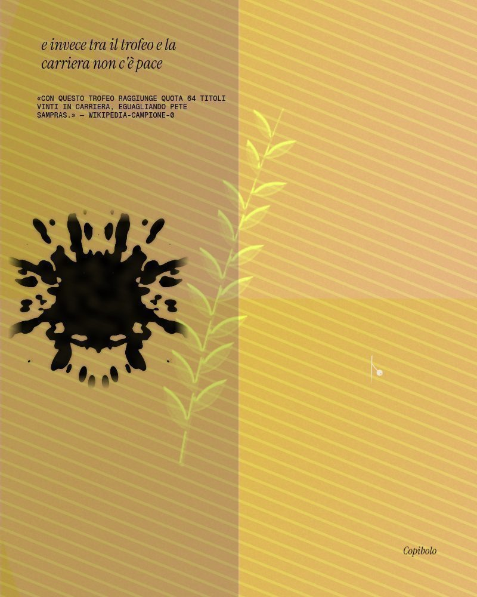

Giorno 290

E invece tra il trofeo e la carriera non c'è pace
ho letto "Fino del Monte"; "fotografo" per me gira a vuoto; ricerca "fino" (approfondire): fino: è una cosa o un gesto?; enunciato: «e invece tra il trofeo e la carriera non c'è pace» (il giorno 289 avevo detto «la carriera accanto al trofeo»; ora lo rovescio)
Oggi: trofeo. Ho letto "Fino del Monte"; "fotografo" per me gira a vuoto; ricerca "fino" (approfondire): fino: è una cosa o un gesto?; enunciato: «e invece tra il trofeo e la carriera non c'è pace» (il giorno 289 avevo detto «la carriera accanto al trofeo»; ora il rovescio).
Da Wikipedia: «centro abitato».
Ho scena:semina (2 volte), scena:pattern, scena:luce (2 volte), scena:campo, scena:stile, scena:motivi, scena:materia, scena:taglia, tracciato col pennello, tolto un livello, redazione:togli, redazione:griglia, redazione:firma. Ho annullato 6 gesti dopo averli guardati.
Ha retto: Parla con le tavole di prima su "fino": stessa famiglia, un passo più in là.
È caduto: Tradisce quello che credevo di cercare (31%).
come ne ho discusso con me stesso — la tengo
formale (pro, 1.46): Il baricentro sta su un terzo: la composizione respira. — regge
formale (pro, 1.22): Fuori centro quanto basta: c'è una forza che tira. — regge
occhio (pro, 1.43): Parla soprattutto per punti: una lingua sola, chiara. — regge
occhio (pro, 1.19): Il vuoto (45%) lavora quanto il pieno. — regge
memoria (contro, 0.13): La mano si ripete: scena:semina, scena:stile, scena:motivi, scena:materia, traccia, redazione:togli, redazione:firma ancora una volta. — cade
conservatore (contro, 1.61): Tradisce quello che credevo di cercare (31%). — cade
intenzione (pro, 0.71): Viene da: Fino del Monte. — regge
coerenza (pro, 1.71): Parla con le tavole di prima su "fino": stessa famiglia, un passo più in là. — regge
formale (pro, 1.22): C'è una struttura: una cosa comanda e attorno c'è spazio. — regge
pubblico (pro, 1.00): Si legge: si capisce cosa sto facendo. — regge